B站数据治理平台建设
转自公众号：DataFunTalk
http://mp.weixin.qq.com/s?__biz=MzU1NTMyOTI4Mw==&mid=2247704953&idx=1&sn=b1dd885e695b974ba9220828b8534c64
主要内容包括以下几大部分：
1. B 站的用数场景及数据开发治理平台的概况介绍
2. 基于价值体系的数据地图产品建设
3. 基于抽象配置的数据治理产品建设
4. 核心工作及未来规划
B 站的用数场景及数据开发治理平台的概况介绍
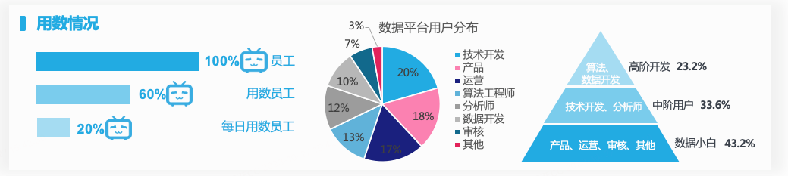
专业：数据平台需要满足专业的数据开发及分析诉求，提升数据供给效率。 门槛：数据平台需要满足产运等用户低门槛的建数、用数、取数要求。 标准化：数据平台需要快速满足多业务、各部门不同的数据诉求，功能既要通用，也要足够灵活。 闭环：数据平台在 B 站也是数据中台，我们同时承担了数据运营、成本治理、规范约束、质量监控等管理角色，因此平台需要替业务完成数据从入仓、生产、运维、治理等流程的全闭环。
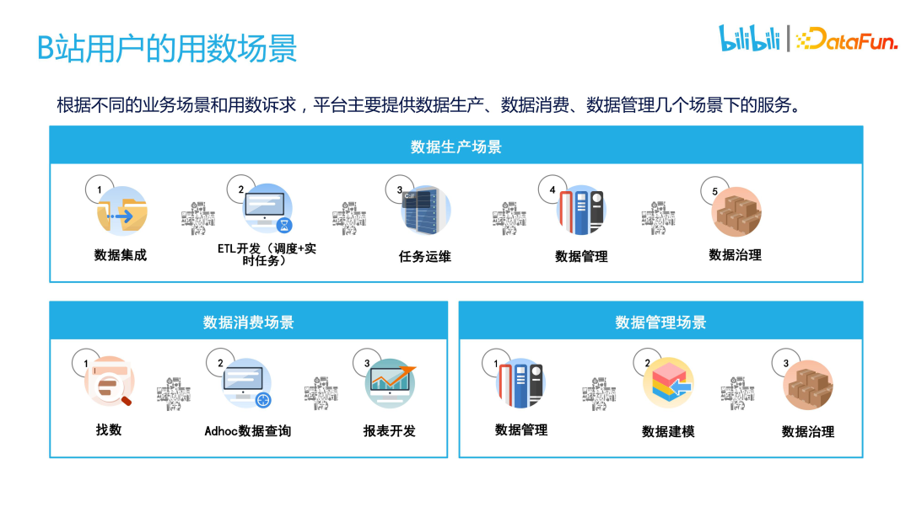
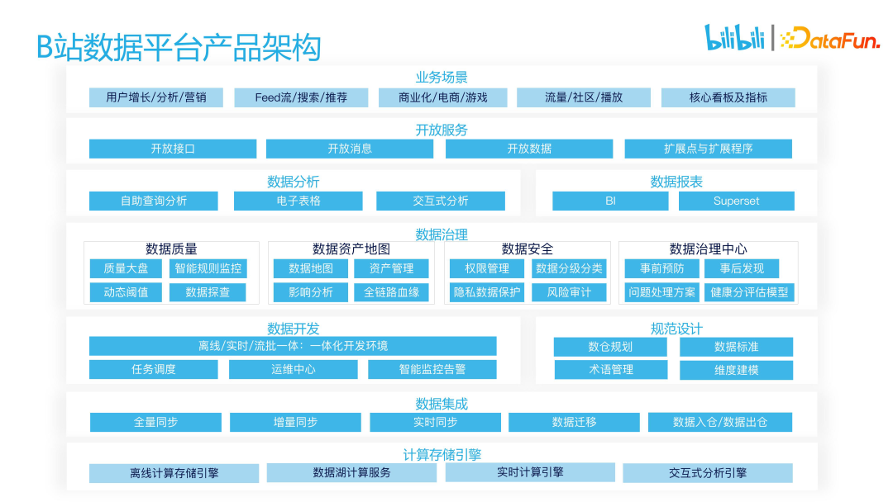
基于价值体系的数据地图产品建设
1. 数据运营的痛点
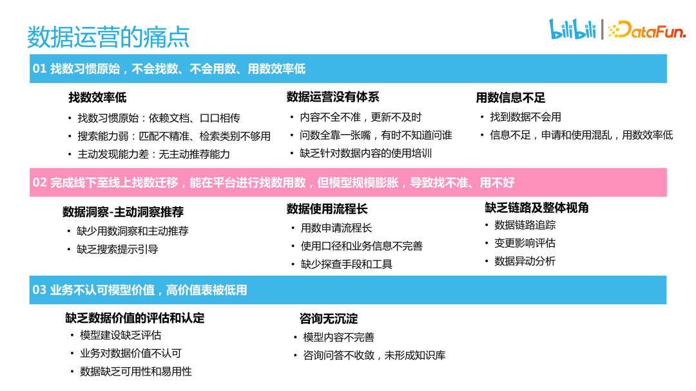
2. 数据运营的解决方案

3. 数据地图产品建设
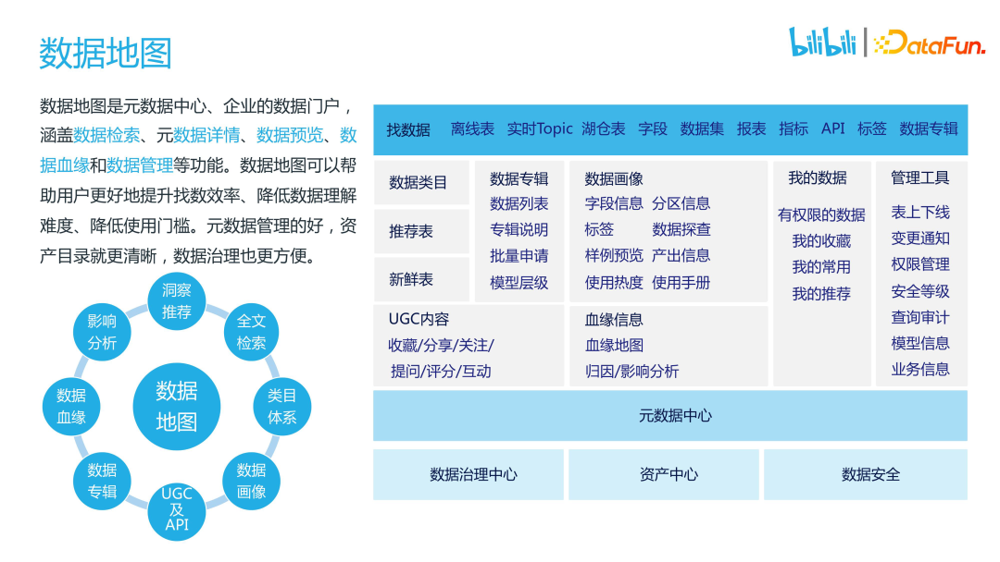
4. 数据运营方法
点(用户)：1V1 标准化
线(业务)：周期节点化
面(平台)：1VN 体系化
5. 评估数据价值
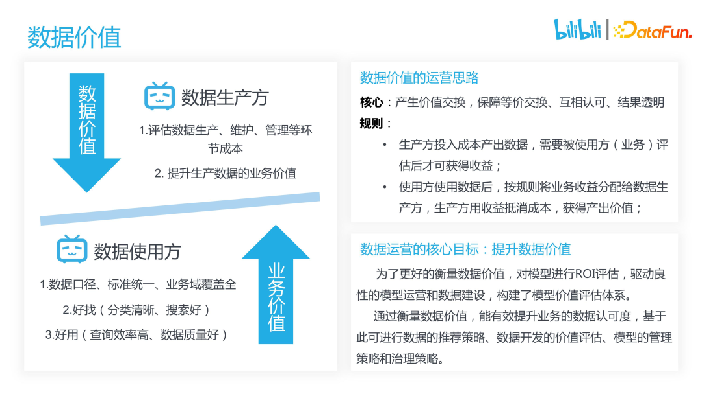
6. 数据价值计算
7. 数据地图效果展示
找数场景
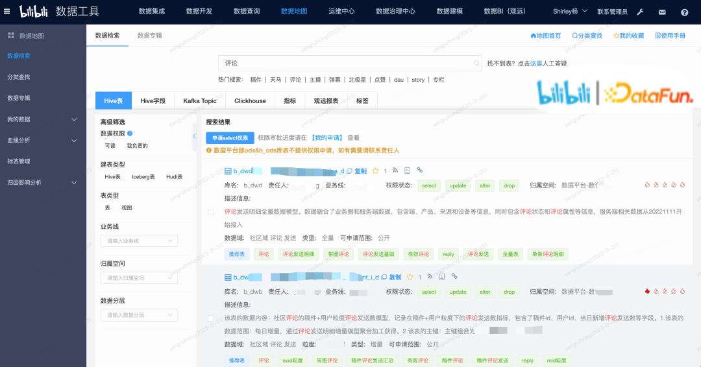
用数场景
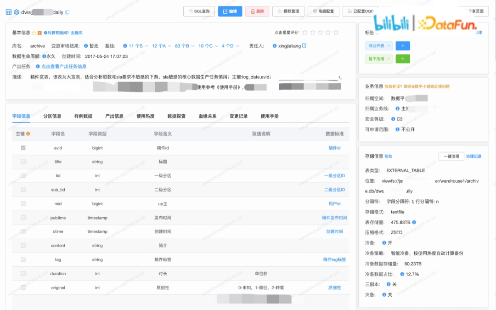
血缘&影响分析
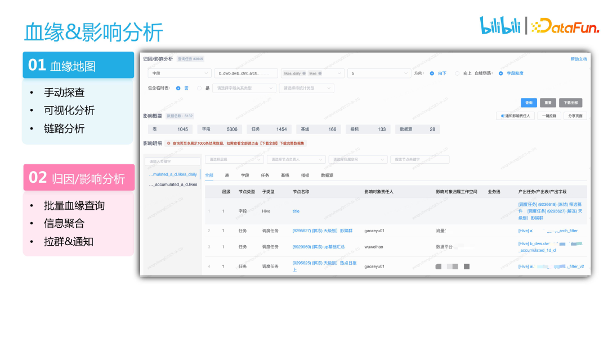
基于抽象配置的数据治理产品建设
1. 建设背景及产品架构
数据治理入手及落地难，操作和流程无法指导 运动式,治理工作不可持续 治理成效的可视化不足 治理不到人，权责不分明 运营成本高，消耗人力
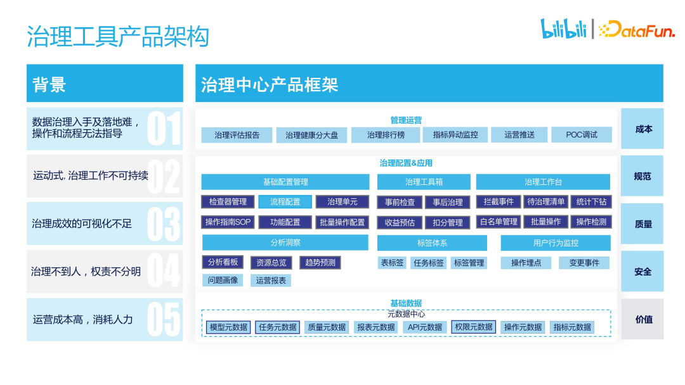
2. 数据治理运营机制及工作流程
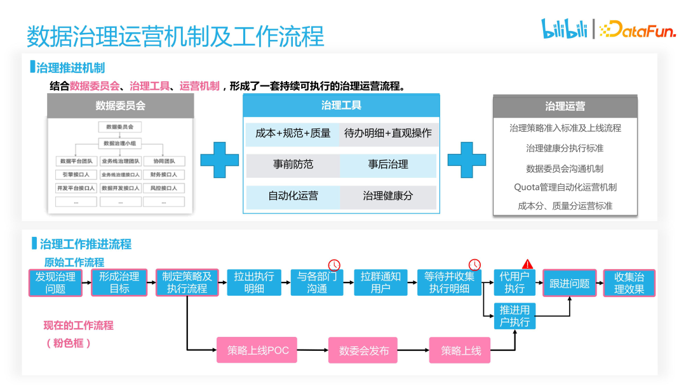
3. B 站治理运营的推进痛点和诉求
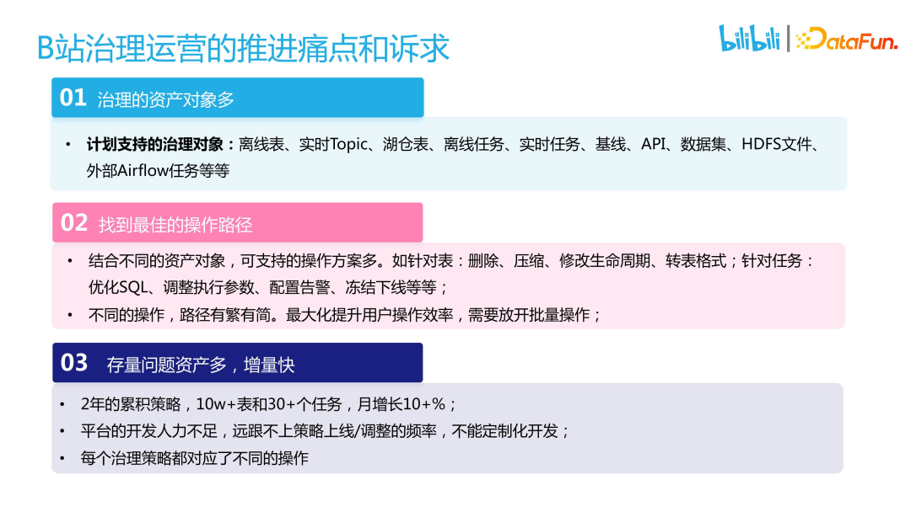
4. 治理工具的解决方案
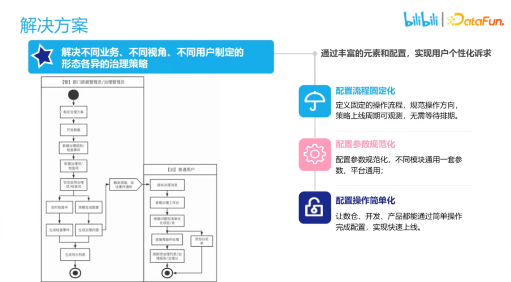
5. 抽象：通过通用化配置实现个性化
抽象治理对象
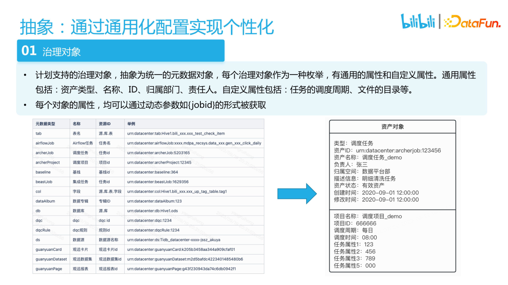
抽象操作和处理方案
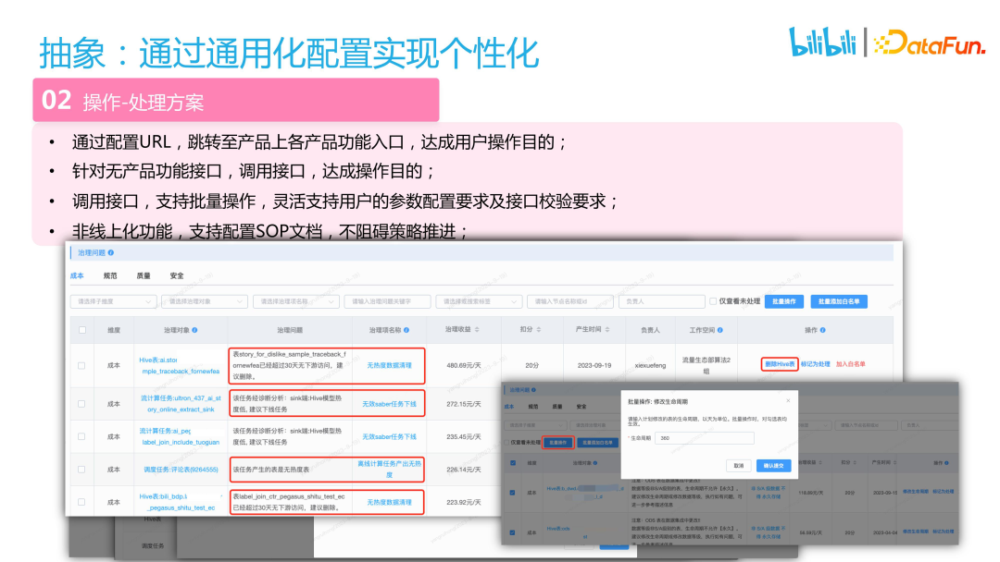
统一治理问题的生成和处理流程
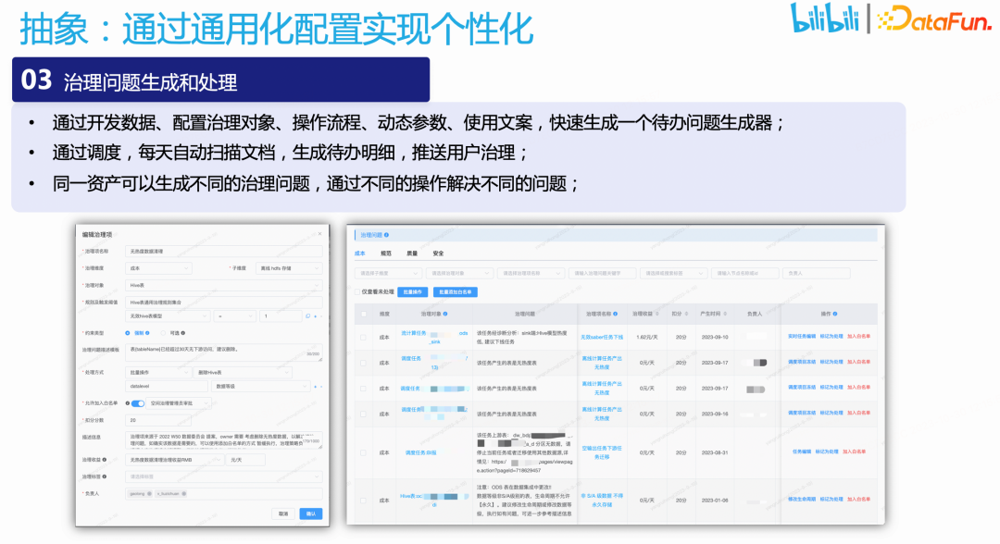
6. 效果及收益